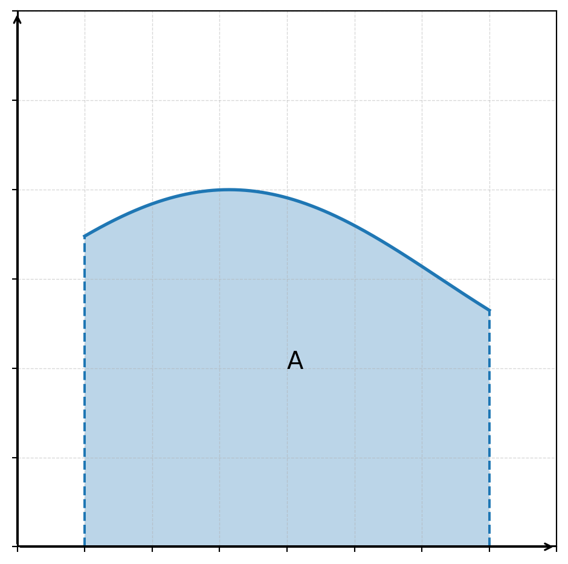
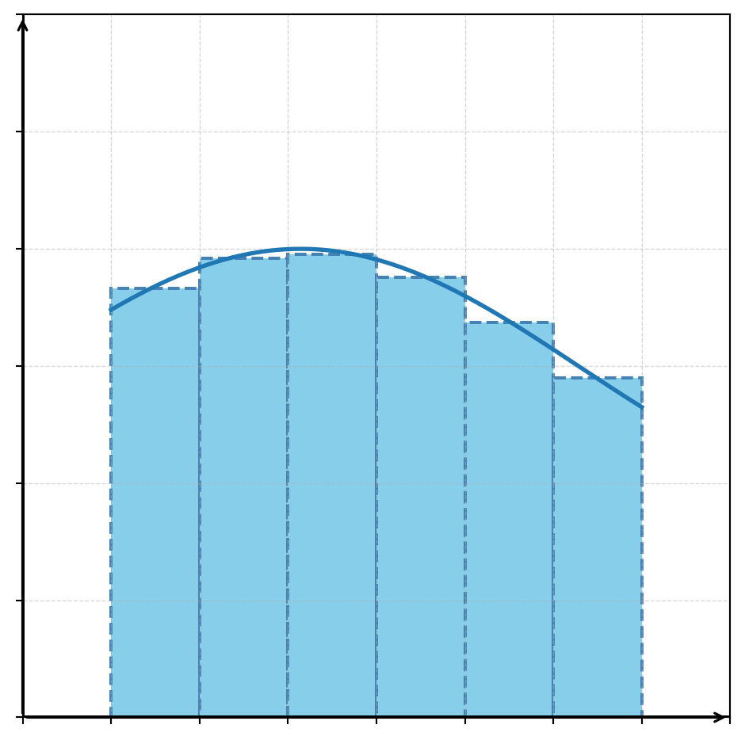
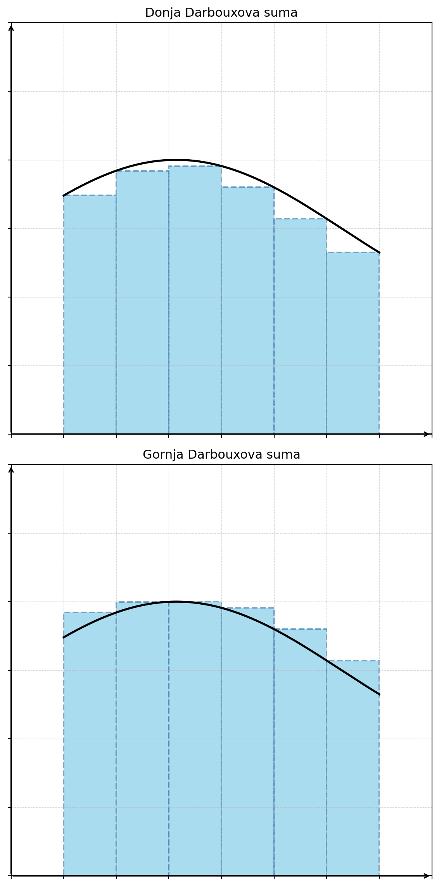

Određivanje površine pravilnih likova nije problem, primjerice određivanje površine kvadrata, kruga ili trapeza. Međutim, određivanje površine lika složenijih granica je dosta složenije.
Recimo da želimo odrediti površinu lika \(A\) kao na sljedećem prikazu:
Prikaži Python kod
import numpy as npimport matplotlib.pyplot as plt# Funkcijadef f(x):return np.sin(x/2)+3# Cijeli grafx = np.linspace(1, 7, 600)# Dio koji želimo zasjenitia, b =1, 7xs = np.linspace(a, b, 400)fig, ax = plt.subplots(figsize=(6,6))# Graf funkcijeax.plot(x, f(x), linewidth=2)# Sjenčanje između grafa i x-osiax.fill_between(xs, f(xs), 0, alpha=0.3)ax.vlines([a, b], 0, [f(a), f(b)], linestyles="--")ax.text(4,2,"A", fontsize=15)# Osiax.axhline(0, color='black')ax.axvline(0, color='black')ax.set_xlim(0,8)ax.set_ylim(0,6)ax.annotate('', xy=(8, 0), xytext=(0, 0), arrowprops=dict(arrowstyle='->', linewidth=1.2, color='black'))ax.annotate('', xy=(0, 6), xytext=(0, 0), arrowprops=dict(arrowstyle='->', linewidth=1.2, color='black'))ax.tick_params(labelbottom=False, labelleft=False)ax.set_xticklabels([])ax.set_yticklabels([])ax.grid(True, linestyle="--",linewidth=0.5, alpha=0.5)plt.show()

Jedna od ideja bila je podijeliti osjenčano područje na pravokutnike koji aproksimiraju danu površinu. Podijelimo segment \([a,b]\) na \(n\) dijelova točkama \[
a = x_0 < x_1 < \dots < x_{n-1} < x_n = b
\]
Ovakvu podjelu nazivamo subdivizijom segmenta \([a,b]\). Sada povucimo dužine iz tih točaka prema grafu funkcije i dobit ćemo pravokutnike. Za svaku stranicu pravokutnika \([x_{i-1},x_{i}]\) možemo nacrtati pravokutnik kojemu je to jedna stranica. U sljedećem prikazu odabrana je visina \((f(x_{i-1})+f(x_i))/2\), to je, naravno, potpuno proizvoljno za ovaj primjer.
Prikaži Python kod
import numpy as npimport matplotlib.pyplot as pltfrom matplotlib.patches import Rectangle# Funkcijadef f(x):return np.sin(x/2)+3# Cijeli grafx = np.linspace(1, 7, 600)# Dio koji želimo zasjenitia, b =1, 7xs = np.linspace(a, b, 400)fig, ax = plt.subplots(figsize=(6,6))# Graf funkcijeax.plot(x, f(x), linewidth=2)# Broj podintervalan =6dx = (b - a) / nfor i inrange(n): x0 = a + i * dx h = (f(x0)+f(x0+dx))/2# pravokutnik rect_left = Rectangle( (x0, 0), dx, h, facecolor="skyblue", edgecolor="steelblue", linestyle="--", linewidth=1.5 ) ax.add_patch(rect_left)# Osiax.axhline(0, color='black')ax.axvline(0, color='black')ax.set_xlim(0,8)ax.set_ylim(0,6)ax.annotate('', xy=(8, 0), xytext=(0, 0), arrowprops=dict(arrowstyle='->', linewidth=1.2, color='black'))ax.annotate('', xy=(0, 6), xytext=(0, 0), arrowprops=dict(arrowstyle='->', linewidth=1.2, color='black'))ax.tick_params(labelbottom=False, labelleft=False)ax.set_xticklabels([])ax.set_yticklabels([])ax.grid(True, linestyle="--",linewidth=0.5, alpha=0.5)plt.show()

Vidimo da ti pravokutnici dobro aproksimiraju danu površinu, na nekim mjestima daju malo više površine, a na nekima manje pa očekujemo da profinjenjem subdivizije (dodavanjem točaka) možemo dobiti sve točniji rezultat.
Darbouxove sume
Neka je \([a,b]\), \(a<b\), segment u \(\mathbb{R}\) i neka je \(f \colon [a,b] \to \mathbb{R}\) funkcija ograničena na segmentu \([a,b]\). To znači da postoje \(m = \displaystyle \inf_{[a,b]} f\) i \(M = \displaystyle \sup_{[a,b]} f\), tj. \(\forall x \in [a,b], \ m \leq f(x) \leq M\). Potrebno je samo razlikovati supremum od maksimuma i infimum od minimuma. Ako funkcija postiže supremum onda je to maksimum, a ako ne onda ostaje samo supremum. Analogno za infimum. Primjerice, funkcija \(f(x) = \dfrac{1-\ln x}{1+\ln x}\) na intervalu \(\langle 0, e^{-2} \rangle\) ima supremum \(-1\), ali ga ne postiže jer je izvan područja definicije.
Uočimo, ako je \([a',b'] \subseteq [a,b]\) podsegment, onda je \[
\forall x \in [a,b], \ m \leq m' \leq f(x) \leq M' \leq M
\]
gdje je \(m' = \displaystyle \inf_{[a',b']} f\) i \(M' = \displaystyle \sup_{[a',b']} f\). Dakle, infimum \([a,b]\) na podsegmentu je veći ili jednak infimumu na segmentu i supremum na podsegmentu je manji ili jednak supremumu na segmentu.
Za subdiviziju \(P\) uzmimo \(m_k = \displaystyle \inf_{[x_{k-1},x_k]} f\) i \(M_k = \displaystyle \sup_{[x_{k-1},x_k]} f\), \(k=1, \dots , n\). Za po volji odabrane točke \(t_k \in [x_{k-1},x_k]\) definiramo sume: \[
s = \sum_{k=1}^n m_k(x_k-x_{k-1}) \qquad
\sigma = \sum_{k=1}^n f(t_k)(x_k-x_{k-1}) \qquad S = \sum_{k=1}^n M_k(x_k-x_{k-1})
\]
Broj \(s\) nazivamo donja Darbouxova suma, \(\sigma\)integralna suma, a \(S\)gornja Darbouxova suma. U ovisnosti o subdiviziji \(P\) česta je oznaka \(s(P)\) i \(S(P)\). Uočimo da je \(m_k(x_k-x_{k-1})\) površina upisanog pravokutnika jer je visina upravo infimum, a za \(M_k(x_k-x_{k-1})\) vrijedi da je visina supremum. Jasno je da vrijedi \[
m(b-a) \leq s \leq \sigma \leq S \leq M(b-a)
\]
Primijetimo to vizualno:
Prikaži Python kod
import numpy as npimport matplotlib.pyplot as pltfrom matplotlib.patches import Rectangle# Funkcijadef f(x):return np.sin(x/2) +3# Intervala, b =1, 7# Graf funkcijex = np.linspace(a, b, 600)# Broj podintervalan =6dx = (b - a) / nfig, ax = plt.subplots(2, 1, figsize=(6,12))titles = ["Donja Darbouxova suma", "Gornja Darbouxova suma"]for k inrange(2):# Graf funkcije ax[k].plot(x, f(x), color="black", linewidth=2)# Pravokutnicifor i inrange(n): x0 = a + i * dx x1 = x0 + dx xx = np.linspace(x0, x1, 200) ymin = np.min(f(xx)) ymax = np.max(f(xx)) height = ymin if k ==0else ymax rect = Rectangle( (x0, 0), dx, height, facecolor="skyblue", edgecolor="steelblue", linestyle="--", linewidth=1.5, alpha=0.7 ) ax[k].add_patch(rect)# Osi ax[k].axhline(0, color="black") ax[k].axvline(0, color="black") ax[k].annotate("", xy=(8, 0), xytext=(0, 0), arrowprops=dict(arrowstyle="->", linewidth=1.2) ) ax[k].annotate("", xy=(0, 6), xytext=(0, 0), arrowprops=dict(arrowstyle="->", linewidth=1.2) ) ax[k].set_xlim(0, 8) ax[k].set_ylim(0, 6) ax[k].grid(True, linestyle="--", linewidth=0.5, alpha=0.5) ax[k].tick_params(labelbottom=False, labelleft=False) ax[k].set_xticklabels([]) ax[k].set_yticklabels([]) ax[k].set_title(titles[k])plt.tight_layout()plt.show()

Profinjenjem subdivizije očekujemo sve bolju aproksimaciju površine ispod grafa, a tada će i gornja i donja Darbouxova suma biti sve bliže.
Definirajmo Riemannove sume:
Broj \(I_*\) zovemo donja Riemannova suma definirana kao \(\displaystyle \inf _P s(P)\), a \(I^*\) je gornja Riemannova suma definirana kao \(\displaystyle \sup _P S(P)\).
Dakle, donja Riemannova suma je gornja ograda donjih Darbouxovih suma, dok je gornja Riemannova suma donja ograda gornjih Darbouxovih suma. Stoga je jasno da vrijedi \[
s(P) \leq I_* \leq I^* \leq S(P')
\]
za proizvoljan izbor subdivizija \(P\) i \(P'\). Činjenica \(s(P) \leq S(P')\) nije trivijalna, ali dokaz izostavljamo.
Neka je \(f \colon [a,b] \to \mathbb{R}\) funkcija ograničena na segmentu \([a,b]\), neka su \(I_*\) i \(I^*\) donji i gornji Riemannov integral funkcije \(f\) na segmentu \([a,b]\). Tada je \[
I_* \leq I^*
\]
Za funkciju \(f \colon [a,b] \to \mathbb{R}\) ograničenu na segmentu \([a,b]\) kažemo da je Riemann integrabilna na segmentu \([a,b]\) ako je \[
I_* = I^*
\]
Tada se broj \(I = I_* = I^*\) naziva Riemannov integral funkcije \(f\) na segmentu \([a,b]\) i označava se kao \[
I = \int_{[a,b]} f(t)dt = \int _a^b f(x)dx
\]
Izračunajmo po definiciji integral konstante funkcije \(f(x) = c\), za \(c \in \mathbb{R}^+\) na segmentu \([a,b]\). Uočimo da tražimo površinu pravokutnika
Za bilo koju subdiviziju \(P\) segmenta \([a,b]\) vrijedi \(m_k = M_k = c\). Tada imamo \[
s = \sum_{k=1}^n m_k(x_k - x_{k-1}) = S = \sum_{k=1}^n M_k(x_k - x_{k-1}) = \sum_{k=1}^n (x_k - x_{k-1}) = c(b-a)
\]
Vidimo da su gornja Darbouxova suma i donja Darbouxova suma uvijek jednake za sve subdivizije \(P\) pa je tada \[
I_* = \sup s = \inf S = I^* = c(b-a)
\]
Dakle, \(\displaystyle \int _a^b c \, dx = c(b-a)\)
Naravno, u dubini analize površina je dobro definirana i nije intuitivno po toj definiciji tvrditi da pravokutnik ima površinu, no to je druga tema.